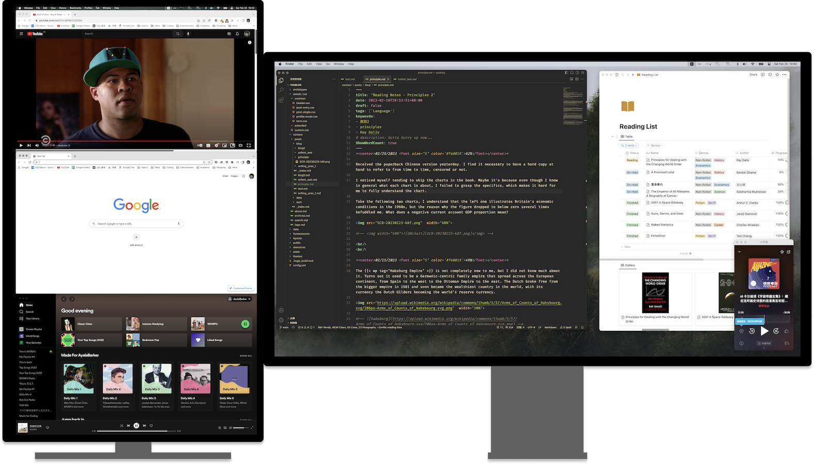

英语中侧重描述电脑屏幕大小时会用「screen real estate」，屏幕如资产，越大的屏幕提供越多的可用空间。
下图是我的「屏幕资产」，由一块竖置的25吋2k屏幕和一块横置的27吋4k屏幕组成。多次调整之后，逐渐形成目前比较固定的使用逻辑。下文做分享。
左侧屏幕为何竖置？
首先，桌子不够大。其次，1个竖向的9:16可以分割出3个横向的9:5.3，且实际面积不会太小，非常适合放置辅助性的内容。这类内容与使用电脑时的核心关注内容相区别，不需要长时间关注，因此在面积分配上优先级不高。
对于这块屏幕我目前的内容放置习惯为：
-
上：视频内容。
以YouTube为主，我喜欢在工作学习的同时放些熟悉的视频，如每集都看过至少5次的Key and Peele。在英语密集型学习的时候，可能被欧路词典取代。
-
中：用于随时做查询检索的浏览器页面。
当然，主要为Google搜索及搜索结果内容。
-
下：音乐播放器。
右侧屏幕上没有出现过真全屏
MacOS下，当一个窗口被全屏，则成为一个「桌面」，在一些使用逻辑上与非全屏页面会有明显区别，沉浸感虽然强，但不能说很方便。自AltTab+Rectangle+Alfred满足了我对窗口管理的一切幻想后，我基本不会再把任何一个页面真正「全屏」了，dock也再没出现过……
右侧屏幕布局的核心逻辑为，平铺两个核心内容区，并使用边角空间再放一个辅助app：
-
左侧：核心内容1。
VSCode最常出现，双屏状态下注意力分配最多的app，统治两块屏幕，为「山中之虎」。
-
右侧：核心内容2。
Notion，最核心的辅助app。各种tracker、code snippets都在这里，需要随时取用，因此给次黄金位置且永远前置。
-
边角：播客app。
小宇宙为主，当做不费脑子的工作时，播客前置提供内容输出。有时可能时荔枝，满足不可告人的guilty pleasure。
总结：平铺的满足感
两块屏幕提供的real estate，让我能够把一轮工作或学习中需要使用的所有app平铺在眼前，且兼顾娱乐和生产力，可谓我独特的「battle station」。习惯于这样的奢侈后，出门在外直接用14吋的笔记本屏幕时便常感局促。
也许，这与拥有大平层是类似的满足感吧。